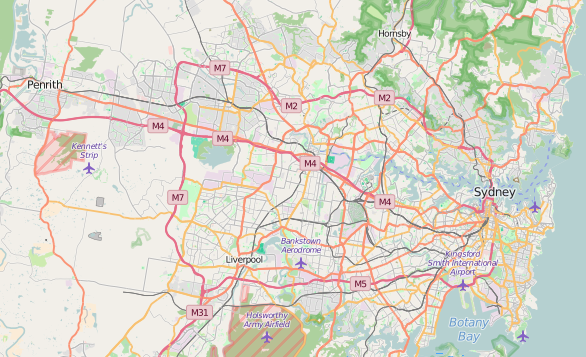

| Map Area: | Sydney NSW, Australia and surrounding suburbs |
|---|---|
| Map Bounds: | {'minLat': -34.0151, 'maxLon': 151.32, 'minLon': 150.643, 'maxLat': -33.6706} |
| Map Link: | Link |
| Map: |  |
| Source Code: | Github Repo |
All code used for auditing, cleaning and preparing the data can be found in the prepData.py file
When initially auditing the raw data and analysing the OSM file, I discovered a number of issues. These issues included:
For example some used St instead of Street or Ave instead of Avenue. I was able to resolve this issue through the use of a regex function to find the last part of the street field and swap with the consistent equivalent. The next issue I ran into was the spelling and format of street names. For example:
There were also street names that contained extra spaces at the end, which needed to be removed. I was able to clean these issues with the use of a street_replacement map / dictionary.
Note: The coding for the process can be found in the fixAddress function.
Through analysing the data I was able to see that a large number (963407) of addresses were missing either a postcode or a suburb. In order to resolve the completeness of the data, I needed to find a data source that contained a list of postcodes and suburbs. At first I went to the Australia Post site and the only free version of the data was in a PDF, which was in a format that could not be easily scraped. I then found a dataset on http://www.geonames.org/ which provided a list of postcodes and suburbs. I was able to read this tab delimited file into a list which I could then use to match either the suburb to the postcode or postcode to the suburb.
Note: The coding for the process can be found in the fixAddress function.
Nodes with no addresses posed a difficult problem to resolve. My first attempt / method I tried was to use the Google Maps Geocoder API, however I ran into an issue with the number records that needed to be updated and the limits imposed per day by Google. If I was able to implement this solution I could have returned the closest street address and place for the coordinates. On this basis I needed another solution, I went back to the dataset I retrieved from the GeoNames site, and realised that this dataset also contained the coordinates for the centre of the suburb. I was now able to use the coordinates of a node to find the closest suburb and postcode.
My first couple of attempts on this were based on finding the location with the closest distance to the coordinates of the node with the missing data. This worked well for a small number of nodes, however as I ran more of the nodes through this process, I was able to estimate that this process could take up to 24 hours to complete. So I still needed another way, which I was able to achieve through the use of NumPy and filtering the cityData by state and was able to retrieve the data for the missing nodes in about an hour. The downside to using this process is that I was only able to retrieve the suburb and postcode.
I was able to verify that this process was working by looking up the nodes GPS coordinates on the OpenStreetMap site
Note: The coding for the process can be found in the fixAddress function.
When looking at the type of amenities I was able to see that there was a lack of consistency in the description of the amenity. Through reviewing a list of the amenities I was able to create a map which allowed the selection of a consistent amenity. As I continued to review the data I also came across a number of tags that could have been classed as amenity types, these included Train Stations and Landmarks. As the list of amenities grew my prepData.py code was starting to become messy so I decided to create a csv file which contained the map and read the map into memory prior to cleaning the data.
Note: The coding for the process can be found in the fixAmenity function.
When reviewing the types of sports for the sporting venues I noticed some of the records were either spelt incorrectly or contained multiple sport types. So that I could analyse the most popular sport types I decided to store the sports in a list. In order to achieve this I first needed to split the tag_value by the separator, however the separator varied between different records, some used a comma and others used a semi-colon. Once I had split the string into the list I was able to then fix the entries that were spelt incorrectly or had abbreviated names, through a sports_map list, which replaced the sport type with a common name. After the sport type was standardised I then appended it to a list.
Note: The coding for the process can be found in the fixSports function.
Once I had worked through these issues I was able to produce a clean json file which I was able to import into MongoDB
Once the data was in MongoDB I was able to write a script (data.py), which allowed me to query the data.
| map.osm | 224MB |
|---|---|
| map.osm.json | 416MB |
| Query: | db.sydney.find().count() |
|---|---|
| Results: | 1,103,402 |
| Query: | db.sydney.find({"type":"node"}).count() |
|---|---|
| Results: | 963,485 |
| Query: | db.sydney.find({"type":"way"}).count() |
|---|---|
| Results: | 139,917 |
| Query: | db.sydney.find().distinct("created.user") |
|---|---|
| Results: | 1485 |
| Query: |
[
{"$group" : {"_id": "$amenity_type", "count": { "$sum" : 1}}},
{"$sort" : {"count": -1}},
{"$limit" : 10}
]
|
|---|---|
| Results: | {u'count': 1081003, u'_id': None}
{u'count': 3217, u'_id': u'Sport Venues'}
{u'count': 3056, u'_id': u'Transport - Train'}
{u'count': 2742, u'_id': u'Parking'}
{u'count': 2503, u'_id': u'Public Amenities - Parks and Reserves'}
{u'count': 1726, u'_id': u'Food and Dining'}
{u'count': 826, u'_id': u'Education - School'}
{u'count': 771, u'_id': u'Public Amenities - Play Grouund'}
{u'count': 596, u'_id': u'Public Amenities - Bench'}
{u'count': 508, u'_id': u'Bars and Clubs'} |
Since Sport Venues is at the top of the Top 10 Amenity Types, I thought it would be interesting to see the top 10 sport types.
| Query: |
[
{"$unwind": "$sport_type"},
{"$group" : {"_id": "$sport_type", "count": { "$sum" : 1}}},
{"$sort" : {"count": -1}},
{"$limit" : 10}
]
|
|---|---|
| Results: | {{u'count': 851, u'_id': u'tennis'}
{u'count': 411, u'_id': u'netball'}
{u'count': 275, u'_id': u'cricket'}
{u'count': 258, u'_id': u'soccer'}
{u'count': 230, u'_id': u'bowls'}
{u'count': 153, u'_id': u'basketball'}
{u'count': 111, u'_id': u'swimming'}
{u'count': 107, u'_id': u'equestrian'}
{u'count': 85, u'_id': u'cricket nets'}
{u'count': 77, u'_id': u'baseball'} |
As I was working through the data the 2 big issues I came across was the consistency of the data and the completeness of the data. I believe that part of the cause was based on the area I choose and the limited number of contributions to the data. This issue could be resolved by promoting of the dataset and its availability. I admit that prior to undertaking this project I was unaware of its existence and whenever I needed to perform any mapping related tasks my first stop would be Google Maps.
My other suggestion for improving the quality and completeness of the data could be to add an algorithm to the data submission process, which could perform a couple of validation checks such as checking that the addresses were in a consistent format and contained all relevant items such as suburb / city and postcode. Something similar to my fixAddress function, from my prepData.py script, could be used to automatically update addresses and identify any addresses that do not conform. The downside to this approach is that if the process is harder to submit data, then there may be less contributions.